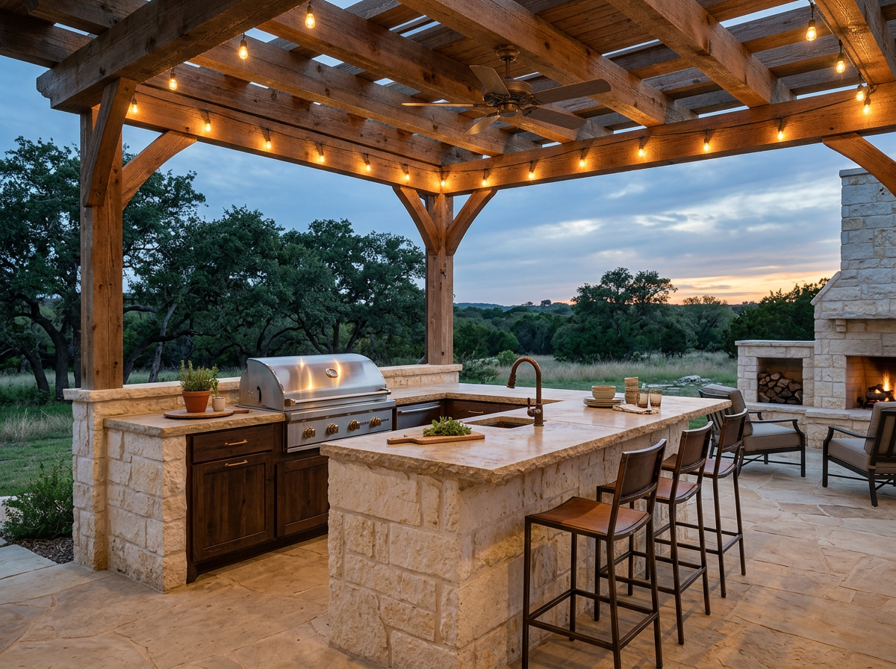

Outdoor living that actually gets used.
The pool you don't use, the patio you don't sit on, the outdoor kitchen no one cooks in — those are the ones designed by someone who never asked how you actually live. We start with the question of what you want to be doing on a Saturday at 6 PM, then we build backward. Shade, breeze, sight lines, and step counts get engineered before the plumbing does.